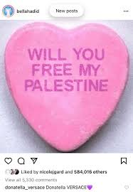

Donatella VERSACE 💜

"Donatella VERSACE 💜" is a meme that circulated on the social media app Instagram. Its format is often used humurously and randomly, often used on memes and quotes. Most of these "purple heart core" memes follow a format of being in complete lowercase, with the last word being in all caps (if the meme is one word, the word is all caps), finishing with a purple heart (💜). For example, "comment COMMENT 💜".
Context/Synopsis
On Valentine's Day of 2022, model Bella Hadid posted a picture of a Valentine's Day candy with the words "Will You Free My Palestine", in reference to the Israel-Palestine conflict. The post garnered likes and comments, one of which came from Donatella Versace, ambassador of fashion brand Versace, previously owned by her brother Gianni Versace.
Underneath the post, Versace replied "Donatella VERSACE 💜". A screenshot was posted on Twitter, where it got siginficant attention and many views.
Spread
The reply became popular for its complete randomness and unexpected nature, considering the original post was meant to be a pro-Palestine statement. On Twitter and TikTok, many made fun of the reply, posting pictures of Versace and/or the fashion shows of Versace, captioning it with her reply.
Usage
The meme is often used for its format. Someone takes a quote or a statement, and changes the last word to be in all caps, with a purple heart at the end. The meme is often used for humorous purposes, with the randomness of the format being part of the joke.
Often times, other memes adopt this format, creating variations of the original "Donatella VERSACE 💜" meme. These memes are dubbed as "purple heart core".
Theoretically, any statement, regardless of meaning, can be adapted into this FORMAT 💜.
Photos/Videos

Leave a Comment!
Comments (0)
No comments yet. Be the first to comment!